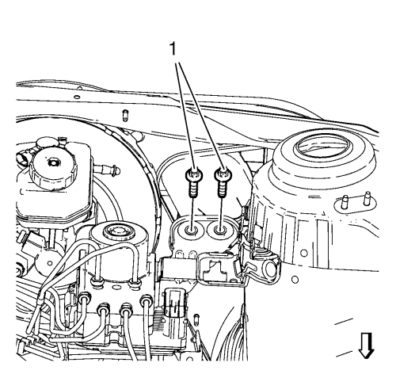
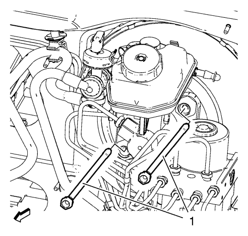
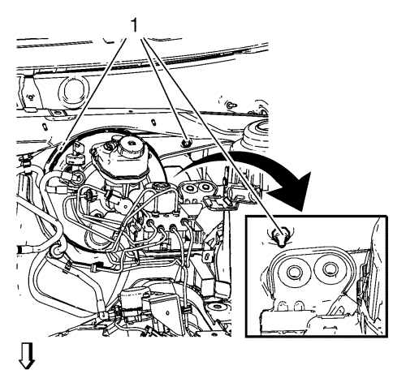
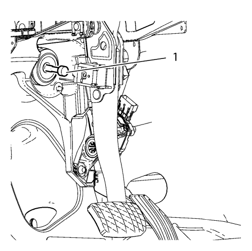
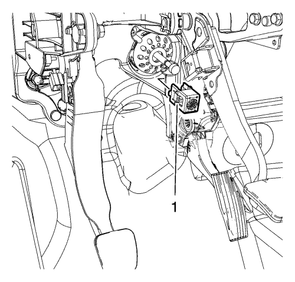
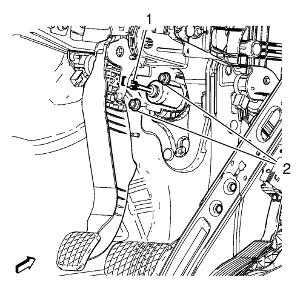
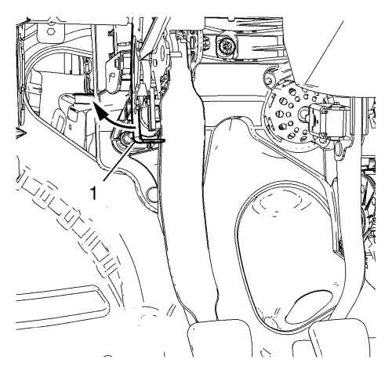

Sustitución de los pedales de freno, acelerador y embrague — Volante a la izquierda
Procedimiento de desmontaje
- Desmonte la batería Consultar
Sustitución de la batería : Gasolina → Diesel .
- Desmonte la bandeja de la batería. Consultar Sustitución de la bandeja de la batería .
- Desmonte la cubierta de apertura del panel de extensión superior del salpicadero. Consultar Sustitución de la cubierta de apertura del panel de expansión superior del salpicadero .

Nota: NO desconecte los tubos flexibles del refrigerante del motor.
- Desmonte el clip (2) del depósito de expansión del radiador.
- Desmonte el depósito de expansión del radiador (1).
Ponga a un lado el depósito de expansión del radiador (1).

- Retire los pernos del soporte del BPMV (1).

- Desmonte los pernos del servofreno (1).

Nota:
| • | NO abra el sistema de frenos hidráulicos. |
| • | Se requiere un segundo mecánico. |
- Tire del servofreno y del conjunto de BPMV hacia delante para tener acceso a las tuercas del soporte del pedal de freno (1).
- Desmonte las tuercas de soporte del pedal de freno (1).
- Desmonte la cubierta de acolchado del revestimiento inferior del tablero de instrumentos. Consultar Sustitución de la cubierta acolchada del revestimiento inferior del panel de instrumentos .
- Desmonte la tapa de revestimiento superior de la columna de dirección. Consultar Sustitución de la tapa de revestimiento superior de la columna de dirección .
- Desmonte la tapa de revestimiento inferior de la columna de dirección. Consultar Sustitución de la tapa de revestimiento inferior de la columna de dirección .
- Desmonte el árbol intermedio de la dirección. Consultar Sustitución del eje intermedio de la dirección .
- Desmonte la columna de dirección. Consultar
Sustitución de la columna de dirección : Volante a la izquierda .

- Desconecte el empujador del pedal de freno (1) del pedal de freno con el pedal de freno aplicado un poco.

- Sustituya el conector de adaptación con clic (1) entre el empujador del servofreno y el pedal de freno por una nueva pieza.

- Desmonte las tuercas del cilindro maestro de embrague (2) del soporte del pedal, si existe.
- Desconecte el empujador del cilindro maestro de embrague (1) del pedal de embrague, si existe.

- Desmonte el perno de soporte del pedal de freno (1) de la barra de acoplamiento.
- Separe el mazo de cables del soporte del pedal.
- Desenchufe los conectores eléctricos.

- Doble con cuidado el soporte (1) de la caja de fusibles hacia el lado para dejar espacio para la extracción del conjunto del pedal.
- Desmonte el conjunto de pedal de freno, acelerador y embrague del vehículo.
- Transfiera las piezas de los componentes según sea necesario.
Procedimiento de montaje
- Monte el conjunto de pedal de freno, acelerador y embrague en el vehículo.
- Doble con cuidado el soporte (1) de la caja de fusibles de nuevo en su posición.
- Monte el mazo de cables al soporte del pedal de freno.
- Enchufe los conectores eléctricos.
Precaución: Consulte Precaución con las fijaciones en la sección Prólogo
- Monte los pernos de soporte del pedal de freno y apriételos a 20 N·m (15 lib. pie).
- Conecte el empujador del cilindro maestro de embrague (1) al pedal de embrague, si existe.
- Monte las tuercas del cilindro maestro del embrague (2) en el soporte del pedal, si existe, y apriételas a 18 N·m (13 lib. pie).
- Conecte el empujador del pedal de freno (1) al pedal de freno.
- Monte la columna de dirección. Consultar
Sustitución de la columna de dirección : Volante a la izquierda .
- Monte el árbol intermedio de la dirección. Consultar Sustitución del eje intermedio de la dirección .
- Monte la tapa de revestimiento inferior de la columna de dirección. Consultar Sustitución de la tapa de revestimiento inferior de la columna de dirección .
- Monte la tapa de revestimiento superior de la columna de dirección. Consultar Sustitución de la tapa de revestimiento superior de la columna de dirección .
- Monte la cubierta de acolchado del revestimiento inferior del tablero de instrumentos. Consultar Sustitución de la cubierta acolchada del revestimiento inferior del panel de instrumentos .
Nota:
| • | NO abra el sistema de frenos hidráulicos. |
| • | Se requiere un segundo mecánico. |
- Tire del servofreno y del conjunto de BPMV hacia delante para tener acceso a las tuercas del soporte del pedal de freno (1).
- Monte las tuercas de soporte del pedal (1) y apriételas hasta 20 N·m (15 lib. pie).
- Monte los pernos del servofreno (1) y apriételos a 19 N·m (14 lib. pie).
- Monte los pernos (1) del soporte de la BPMV y apriételos a 20 N·m (15 lib. pie).
Nota: NO desconecte los tubos flexibles del refrigerante del motor.
- Monte el depósito de expansión del radiador (1).
- Monte el clip (2) del depósito de expansión del radiador.
- Monte la cubierta de apertura del panel de extensión superior del salpicadero. Consultar Sustitución de la cubierta de apertura del panel de expansión superior del salpicadero .
- Monte la bandeja de la batería. Consultar Sustitución de la bandeja de la batería .
- Monte la batería. Consultar
Sustitución de la batería : Gasolina → Diesel .
- Calibre el sensor de posición del pedal de freno. Consultar Calibración del sensor de posición del pedal del freno .
| © Copyright Chevrolet. All rights reserved |